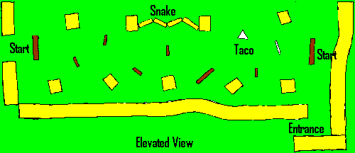

Click on areas of the image to view pictures.
The speed-bale field was an experiment we tried this past summer. The games on this field were fast-paced and had a high volumn of paint in the air at all times. Once eliminated a player could climb on top of the border bales and watch the match finish.